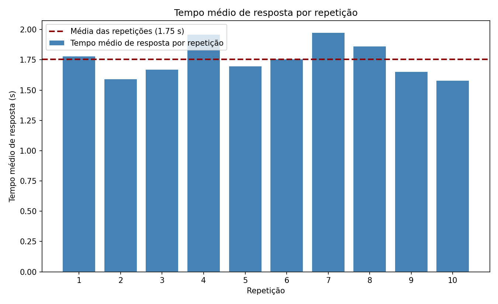

RESULTADOS DA SIMULAÇÃO
1000 requisições simuladas — 10 repetições independentes

Tempo médio de resposta
1,75s
Intervalo de confiança de 95%:
[1,65s; 1,86s]
MÉTRICAS DE RECURSO
Médias das 10 repetições
2,8%
Utilização do Validador
67%
Utilização do Processador
0,35
Tamanho médio da fila do Validador
1,52
Tamanho médio da fila do Processamento
PERGUNTAS DE ESTUDO
1. Com a taxa de chegada atual (0,8 req/s) e um único processador, o tempo médio de resposta fica abaixo de 2 segundos?
Tempo médio de resposta é de 1,75s.
2. Com um único processador, a utilização do servidor ultrapassa 90% sob a taxa de chegada atual?
Utilização do servidor é de 67%.
3. Com a decisão de rota atual (limiar de 3 MB), o processamento das imagens corresponde a pelo menos 80% das requisições?
78% dos requests foram processados.